Geometry Tagging: Essential Knowledge
This section explains concepts fundamental to geometry tagging.Component Tags
Tags are string-based information stored directly on the topological components of a shape's geometry asset. Each face, edge, and vertex may have an arbitrary number of tags. Their purpose is to identify semantically different parts of the geometry, for example when using the comp operation.A tag is a string that defines its name. Example: "Name"
Tag hierarchy
Tags are hierarchically grouped with the name separator "." (dot). Example: "Facade.Front", "Facade.Side"The dot-separated names within a tag are referred to as subtags.
Tag queries
A tag query is a string that may include wildcards to replace subtags. There are two wildcards:| ? (question mark) | Matches exactly 1 subtag. Example: "?.Front" |
| * (asterix) | Matches 1 or more subtags. Example: "Facade.*.Left" |
Related
- geometry.tags function
- geometry.hasTags function
- tag operation
- deleteTags operation
- setTagsFromEdgeAttrs operation
- comp operation
- comp function
- setback operation
Auto-Tags
Selected geometry creation operations automatically apply predefined tags. These tags identify semantically different parts of the output geometry.Auto-tags applied by a certain operation remain accessible until the operation is called again, replacing them with new ones.
Colors
These are the rules for the colors used in the following examples.
Blue --> color("#0399F5")
Green --> color("#09DE1F")
Yellow --> color("#FADB19")
Purple --> color("#8D09DE")
Red --> color("#FF360A")
Orange --> color("#FA9100")
Operations applying auto-tags on faces
Face components are categorized into three principle types: bottom, side, and top. The bottom components correspond to the original faces, while the new side faces may be further categorized as either inner or outer, depending on whether they emanate from a hole.Extrude
 |
See extrude operation.
Init -->
extrude(4)
comp(f) { isTagged("extrude.bottom") : Blue
| isTagged("extrude.side.outer"): Yellow
| isTagged("extrude.side.inner"): Red
| isTagged("extrude.top") : Green }
|
Envelope
| 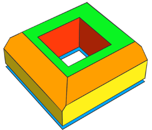 |
See envelope operation.
Init -->
envelope(normal, 4, 2.5, 45, 3, 45, 2, 50, 2, 50)
comp(f) { isTagged("envelope.bottom") : Blue
| isTagged("envelope.side.base") : Yellow
| isTagged("envelope.side.slope"): Orange
| isTagged("envelope.side.inner"): Red
| isTagged("envelope.top") : Green }
|
Taper
| 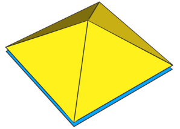 |
See taper operation.
Init -->
taper(4)
comp(f) { isTagged("taper.bottom"): Blue
| isTagged("taper.side") : Yellow }
|
Roofs
All roof operations apply the same base tag "roof".
| 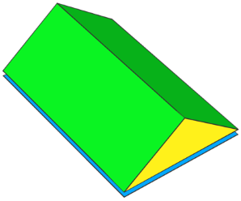 |
See roofGable operation.
Init -->
roofGable(byHeight, 4)
RoofAutoTags1
RoofAutoTags1 -->
comp(f) { isTagged("roof.bottom") : Blue
| isTagged("roof.side") : Yellow
| isTagged("roof.top") : Green }
|
| 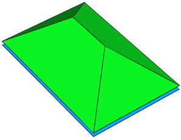 |
See roofHip operation.
Init -->
roofHip(byHeight, 4)
RoofAutoTags1
|
| 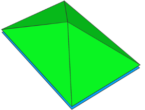 |
See roofPyramid operation.
Init -->
roofPyramid(byHeight, 4)
RoofAutoTags1
|
The roofRidge and roofShed operations additionally classify the sides as inner and outer.
| 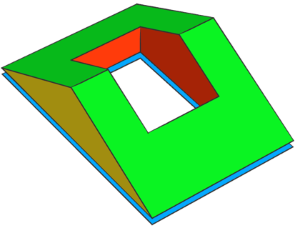 |
See roofRidge operation.
Init -->
roofRidge(byHeight, 4)
RoofAutoTags2
RoofAutoTags2 -->
comp(f) { isTagged("roof.bottom") : Blue
| isTagged("roof.side.outer"): Yellow
| isTagged("roof.side.inner"): Red
| isTagged("roof.top") : Green }
|
| 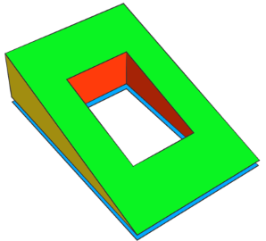 |
See roofShed operation.
Init -->
roofShed(byHeight, 4)
RoofAutoTags2
|
Boolean operations
In Boolean operations, both faces and edges receive auto-tags: faces according to their source operand, and the newly created intersection edges.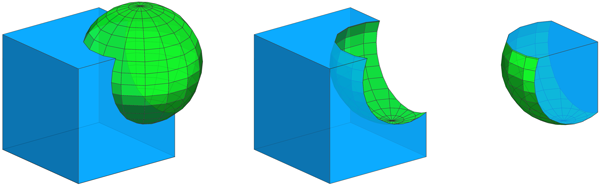
BoolAutoTags -->
comp(f) { isTagged("bool.A") : Blue
| isTagged("bool.B") : Green }
comp(e) { isTagged("bool.cut"): Orange }
Cube --> primitiveCube
Sphere --> t(0.3,0.3,0.3) primitiveSphere
See union, subtract, intersect operations.
|
Left --> union { Cube | Sphere }
BoolAutoTags
Middle --> subtract { Cube | Sphere }
BoolAutoTags
Right --> intersect { Cube | Sphere }
BoolAutoTags
|
Operations applying auto-tags on edges
The setback operation and its variants — setbackToArea, setbackPerEdge, shapeLUO and splitAndSetbackPerimeter — automatically tag edge components using the same base "setback".Shape
| 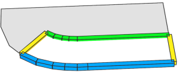 |
Init -->
setback(4) { front: ShapeAutoTags }
ShapeAutoTags -->
comp(e) { isTagged("setback.front"): Blue
| isTagged("setback.side") : Yellow
| isTagged("setback.back") : Green }
|
Remainder
| 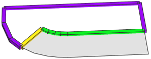 |
Init -->
setback(4) { front : NIL
| remainder: RemainderAutoTags }
RemainderAutoTags -->
comp(e) { isTagged("setback.side") : Yellow
| isTagged("setback.back") : Green
| isTagged("setback.remainder"): Purple }
|
Tag propagation
Geometry-modifying operations preserve tags on existing components and propagate tags to newly constructed components when applicable based on consistent rules.Geometry subdivision
When splitting geometry, tags on existing edge and face components that were cut are kept. New components, such as new faces to close cut volumes, have no initial tags.
| 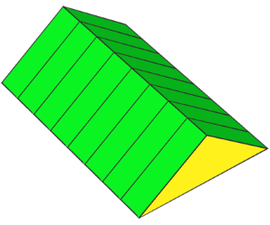 |
Setup: The faces are tagged by the roofGable operation, while edge and vertex tags are added using the tag operation.
Init -->
roofGable(byHeight, 4)
tag("EdgeTag", edges)
tag("VertexTag", vertices)
VisualizeTags
VisualizeTags -->
RoofAutoTags1
comp(e) { isTagged("EdgeTag") : Orange }
comp(v) { isTagged("VertexTag"): Purple }
These tags are kept by subsequent operations, e.g., when using the split operation.
Init -->
roofGable(byHeight, 4)
tag("EdgeTag", edges)
tag("VertexTag", vertices)
split(x) { '0.25: t(0,split.index,0) VisualizeTags }*
|
Face tag propagation
New faces constructed on top of existing ones get the tags of their source face.
| 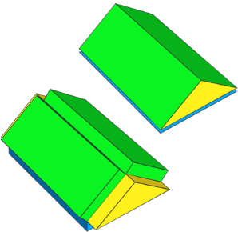 |
Here the auto-tags applied by the roofGable operation are automatically
propagated to the new faces constructed by the extrude operation.
Note: Each face now has both extrude and roof auto-tags.
Init -->
roofGable(byHeight, 4)
extrude(1)
RoofAutoTags1
|
Edge and vertex tag propagation
Edge and vertex propagation follows a simple rule in all geometry-modifying operations (e.g., extrude, offset): any new face "emanating" from an edge inherits that edge’s tags; any new edge "emanating" from a vertex inherits that vertex’s tags.
| 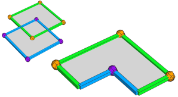 |
Setup: This example subtracts two quads, each with distinct edge and vertex tags applied by the tag operation. The VisualizeTags rule uses geometry.hasTags to color each component according to its tags.
Note: We avoid the isTagged selector (see comp) because it also matches inherited tags (e.g., selecting an untagged edge of a tagged face), whereas geometry.hasTags restricts the test to the inspected component.
Init --> subtract { A | B }
VisualizeTags
A --> tag("e.A", edges)
tag("v.A", vertices)
B --> tag("e.B", edges)
tag("v.B", vertices)
t('0.5, 0, '0.5)
VisualizeTags -->
comp(f) { geometry.hasTags("e.A", faces): Green
| geometry.hasTags("e.B", faces): Blue
| all : White. }
comp(e) { geometry.hasTags("e.A", edges): Green
| geometry.hasTags("e.B", edges): Blue
| geometry.hasTags("v.A", edges): Orange
| geometry.hasTags("v.B", edges): Purple }
comp(v) { geometry.hasTags("v.A", vertices): Orange
| geometry.hasTags("v.B", vertices): Purple }
|
| 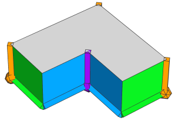 |
Example extrude operation.
Init -->
subtract { A | B }
extrude(4)
VisualizeTags
|
| 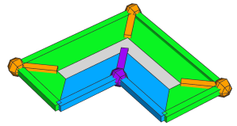 |
Example offset operation.
Init -->
subtract { A | B }
offset(-2)
VisualizeTags
|
| 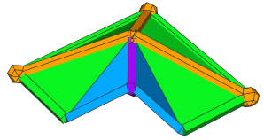 |
Example taper operation.
Init -->
subtract { A | B }
taper(4)
VisualizeTags
|
Also see the setTagsFromEdgeAttrs operation for more examples.
Geometry cleanup
The cleanupGeometry operation maintains existing tags. This means:
- Tagged edges and edges between coplanar faces with different tags are kept.
- Tagged vertices and collinear vertices between edges with different tags are kept.
Continuing the example from above: Using the cleanupGeometry operation to merge coplanar faces has no effect because of the existing tags.
Init -->
subtract { A | B }
offset(-2)
Cleanup
Cleanup -->
cleanupGeometry(edges, 0)
VisualizeTags
|
|
After using the deleteTags operation to remove the propagated tags from the inner edges, the adjacent faces with the same tags are merged.
Init -->
subtract { A | B }
offset(-2)
Cleanup
Cleanup -->
deleteTags("v", edges)
cleanupGeometry(edges, 0)
VisualizeTags
|
Operations that clear all tags
By design
These operations replace the current shape's geometry asset, thus existing component tags are cleared.- i (insert), insertAlongUV operations
- primitiveXXX operations
- footprint operation
- resetGeometry operation
Unsupported
These operations do (currently) not support working with component tags and clear all tags.- splitArea operation
- reduceGeometry operation
Copyright ©2008-2025 Esri R&D Center Zurich. All rights reserved.